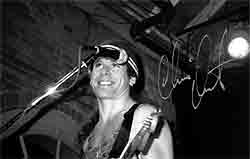

Сейчас ему тридцать восемь, он подвижен, ловок и прыгуч, как акробат. Его мускульная сила и гибкость пульсирует в видавшем виды Стратокастере модели 1963 года. За последние шесть лет Крис Дуарте записал всего три альбома, все три разные по звучанию и по направлению успеха. Все три оставили резкий зигзагообразный росчерк в оценочной шкале блюзовых бестселлеров.Зигзаг траектории взлета, затем падения, и снова сенсационного подъема с его последним альбомом "Love Is Greater Than Me". "Лучший гитарный альбом 2000 года!" - в один голос сливаются отзывы журналов "Guitar Player" и "Guitar World". "Крис Дуарте не просто электрогитарный супермен, в последнем альбоме он значительно больше, он, без сомнения - лучший гитарист на Земле!" - продолжают не скупиться на громкие похвалы обозреватели.
Да, в последнем альбоме мы слышим что-то и от Джими Хендрикса, и от Стиви Рэй Воэна и даже от "Led Zeppelin". Со всем этим тяжеловатым багажом Крис и устремился своей дорогой - на этот раз вертикально вверх, к пяти заветным звездам - высшей оценке знатоков. Теперь уже вряд ли кто-либо сможет сказать, что Крис - бледная копия Стиви. Раньше одни сравнивали его со Стиви Рэй Воэном, другие спрашивали, как он относится к этим сравнениям. Крис реагировал спокойно: "Не имею ничего против приобщения к легенде".
Вообще, слушая его интервью, создается впечатление, что в жизни Крис Дуарте человек удивительно спокойный, к тому же вежливый и образованный, совсем не опьяненный своим последним успехом. Его речь изысканно правильна, голос приглушен и хорошо поставлен, он - сама мягкость, доброжелательность и кротость. Нет и тени звездной развязности Джими Хендрикса, ни следа простоватой грубости Стиви Рэя. Вот он скромно сидит на гостиничном табурете и пьет минеральную воду. Да, Крис к тому же трезвенник, он даже не курит! Его интервью внешне слегка напоминает беседу со спортсменом, любящем поговорить о бейсболе и вообще охотно отвечающем на любые вопросы, как о музыке, так и на самые житейские, даже глубоко личные:
- Один из треков последнего диска называется "Крис и Изель". Чье это имя - Изель?
- Так зовут мою невесту, мы обручились с ней в феврале месяце, а следом появилась и музыка.
- Ваше имя - Кристофер Дуарте, звучит по-испански. Откуда берут начало ваши корни?
- Мои предки по отцу - испанцы, по матери - ирландцы, так что я на все сто процентов католик.
- Назовите лучший и худший фильмы, которые Вы видели?
- Лучший фильм, который я смотрел - это "Шестое Чувство", а худшее кино на моей памяти называется "Bent" - там был и МакКелли и даже Мик Джаггер появлялся всего на пять минут, но в целом фильм оставил неприятное впечатление.
- Как называлась последняя книга, которую Вы прочитали?
- "Уходящее Время" Джозефа Хеллера, но та книга, что я читаю сейчас, захватила меня целиком. Она называется "Стиллуэлл и Американский Эксперимент в Китае" авторства Барбары Тачмен.
- Часто можно услышать, как на сцене, меняя порванную струну, Вы цитируете Уильяма Шекспира.
- Это потому, что у всех шекспировских изречений очень четкий и яркий ритм, мне просто нравится, как это звучит, даже невзирая на вложенный в эти слова смысл…
- Может быть, Вы затаили мечту попробовать себя на театральной сцене?
- Да, я был бы не против показаться в какой-нибудь шекспировской трагедии, например, застывшим центурионом где-нибудь на страже у дверей Цезаря. Впрочем, это просто еще одна несбывшаяся детская мечта.
- Кстати, расскажите о своем детстве. Как называлась первая Ваша гитара?
- Это была электрическая "Supro" с выносной колонкой. Мама купила ее, когда мне исполнилось тринадцать.
- Когда Вы написали свою первую песню?
- Кажется, в пятнадцать лет. Это была сатирическая песенка-обзывалка в адрес моего друга Сэма. Я и слов-то ее уже не могу вспомнить, помню только, что тогда все время практиковался с гитарой - я считал себя прежде всего гитаристом. Слушал, в основном, джаз и хотел стать именно джазовым гитаристом. Уже в шестнадцать я исполнял джаз в небольших кафе Сан-Антонио. Затем стал немного зарабатывать, бросил школу и отправился в более насыщенный жизнью Остин.
Остин 1980 года был райским блюзовым островком, если хотите, техасским Чикаго, городом братьев Воэн. Этот город переубедил меня переключиться на блюз, основанный на громком и резком саунде. В восьмидесятых жить в Остине и быть гитаристом автоматически означало находиться под влиянием группы "Double Trouble" и Стива Рэй Воэна. Нет ничего удивительного в том, что мой дебютный диск 1995 года "Texas Sugar" все еще носил глубокий отпечаток восьмидесятых. И это ведь был очень успешный альбом, раз по его выходу в Остине основали фан-клуб Криса Дуарте.
В звучании гитары Криса тогда почувствовали возрожденный дух Стиви Рэй Воэна, так же, как в свое время в самом Стиви некоторые видели воскресшего Джими. Дебют Дуарте под лейблом "Silvertone" неожиданно оказался даже более успешным, чем ожидали, ведь он совпал со все нарастающим культом младшего Воэна. Это несомненно громко срезонировало, а затем… затем зигзаг неожиданно рванул вниз. Второй альбом стал первой неудачей, после чего последовал разрыв с "Silvertone".
- Как и почему произошел разрыв с "Silvertone"?
- Ну это ведь бизнес! Второй альбом не был так хорош, как первый, он даже наполовину не был востребован публикой, поэтому "Silvertone" освободила и меня, и себя… Я почувствовал себя свободным, пускай заодно и от лишних денег. Неважно, зато теперь я сам себе хозяин!
- Эти два первых альбома, они совсем несхожи, почему вдруг такая разница?
- "Texas Sugar" был записан экспромтом, можно сказать, живьем. Мы ничего не подкладывали и не вычищали, гитары ужасно фонили - это был совсем сырой альбом, и мне как раз нравилась его сырость. Конечно, там множество ошибок, но именно все эти шероховатости делают его реалистичным и живым - он абсолютно естественен.
Что я думаю о неудаче "Tailspin Headwhack"? Видимо, я слегка перестарался. В нем слишком много синтезировано - хотелось сделать что-то совсем другое, чтобы не повторяться…
- Это чтобы Вас перестали сравнивать со Стиви Рэй Воэном?
- Я стараюсь не думать о том, с кем меня будут сравнивать - не в этом дело, просто хотелось завернуть чуть посложнее. На второй диск было затрачено в десятки раз больше времени и денег, но в итоге я вижу, что именно все эти лишние усилия и умертвили его.
- Можно надеяться, что вскоре Вы запишете по-настоящему живой, концертный альбом?
- Очень может быть, я ведь скорее публичный исполнитель, чем студийный. В студии чувствуешь себя, словно в пустоте, и не можешь завестись как следует… Вот и получается, что есть "живые" альбомы и есть "студийные".
- Расскажите о своем джазовом прошлом…
- Если кого я и "идолизировал" (idolize), так это Джона Колтрейна, его мудрость, знания и приверженность музыке. Он был для меня превыше всех. Конечно, я также слушал Сан Ра, Маклафлина, Джо Пасса и многих других. Рэй Воэн стал более поздним влиянием.
- У Вас потрясающая мощь звука, целая стена усилителей, и "Fender" и "Marshall"…
Вообще-то я предпочитаю "Marshall", только с этим усилителем и можно добиться "хендриксовского" звучания.
- Почему Вы не играете "слайдом"?
- Видимо, из благоразумия. У меня не возникает желания выйти на сцену и продемонстрировать, насколько слабо я им владею.
- У Вас на сцене обычно два фендеровских "Страта" - один 63-го года, другой новый. Есть ли какая-либо принципиальная разница в их звучании?
- Старый "Страт" звучит лучше - у него более глубокий и мягкий голос… Но некоторые новые модели иногда имеют необычные оттенки звука. Хотя, если я в эмоциональном порыве швыряю на пол гитару, то всегда только новую - так оно дешевле!…
- Раскажите о последнем туре по Европе, как прошли концерты в Германии, Англии и Австрии?
- Предварительно условились, что я буду появляться в гитарных дуэлях с Джо Сатриани, а лейбл "Silvertone" должен был поддержать этот тур, но затем отказался… А мне и не нужна была их поддержка - я получал всего пару сотен баксов за концерт и чувствовал себя отлично, пускай и путешествовал далеко не в люкс-условиях. Бельгия - великолепна! И Австрия! Но больше всего меня впечатлил Рим, а также Лондон - вот города, в которых стоит пожить какое-то время!
- Могли ли Вы когда-нибудь после концерта воскликнуть: "Парень, сегодня ты был великолепен!"
(Здесь Крис задумался, напряг морщины на лбу...)
-
Такое бывало нечасто, может быть, всего раз пять, не более… Обычно больше
вспоминаешь не о том, как реагировал зал, а о том, что хотел сделать, да не
вышло. Бывает так, что сыграешь как никогда плохо, а публика заводится, и тебе
говорят: "Да ты просто волшебник!" - даже не знаю, в чем тут дело…
- Расскажите, когда Крис Дуарте играл последний раз, держа гитару за головой…
- О, это было лет шесть тому назад, а за спиною и того более… Кто-то сделал известный снимок, когда я исполнял "Sky Is Crying", держа гитару за спиной - на самом деле это не такой уж и сложный фокус. Вся сложность его в том, что ты должен держать ноту, когда возвращаешь гитару назад и эта нота должна звучать, не прерываясь. Это всего лишь ловкость пальцев, не более, просто цирковой трюк, и к музыке он не имеет отношения.
- Вернемся к альбомам - три года прошло с выхода "Tailspin Headwhack". Теперь уже под новым лейблом появляется третий, на мой взгляд, самый ударный диск "Love Is Greater Than Me"…
- Да, все было так, словно мы снова записывали "Texas Sugar," снова с продюсером Дойлом Бреммелом в той же самой контрольной будке. Получился очень простой и живой альбом. Кажется, он самый разнообразный. Например, можно услышать, как хард-роковый блюз неожиданно сменяется контрастом джазового соло большой эпифоновской гитары. Во время записи мы с Дойлом весьма разошлись во взглядах, и это пошло на пользу. Дойл был резко против стиврэйвоновского изнурения, он был переутомлен белыми мальчишками, поливающими хард-блюзом из оглушительных гитар, но я убедил его, что хочу сделать не совсем обычный, хотя и хард-блюзовый альбом. Затем, при сведении и микшировании добавочных треков мы расположили микрофон прямо перед динамиком, под определенным углом и получилось то, что надо! Натуральное, живое и сочное звуковое мясо! Видимо, то, что мы никак не могли найти во втором альбоме, на этот раз появилось под простыми словами "Love Is Greater Than Me"…
Александр ЧЕЧЕТТ
Интервью подготовлено по материалам, любезно предоставленным журналом "Smoke Magazine".
Перепечатано из журнала Jazz-квадрат